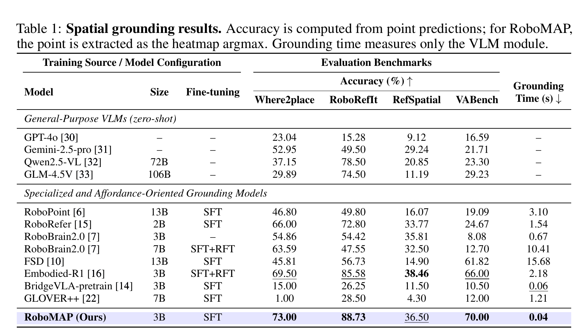
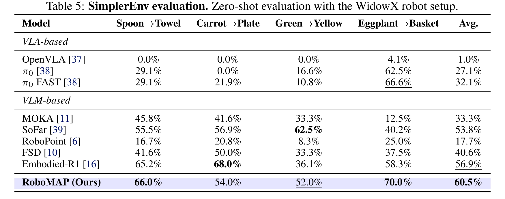
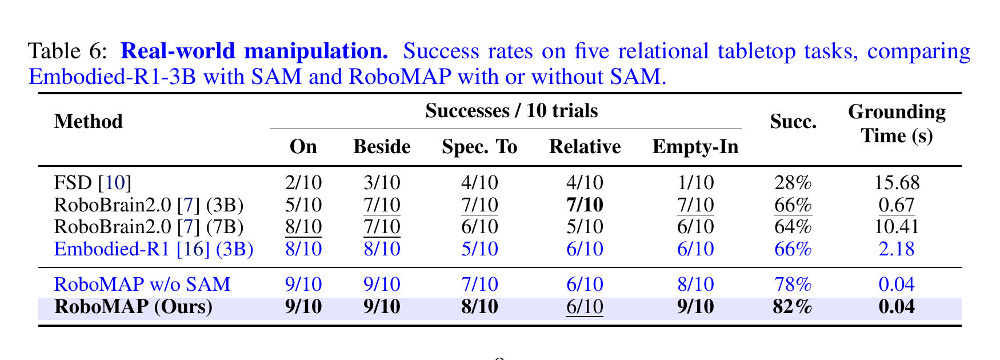
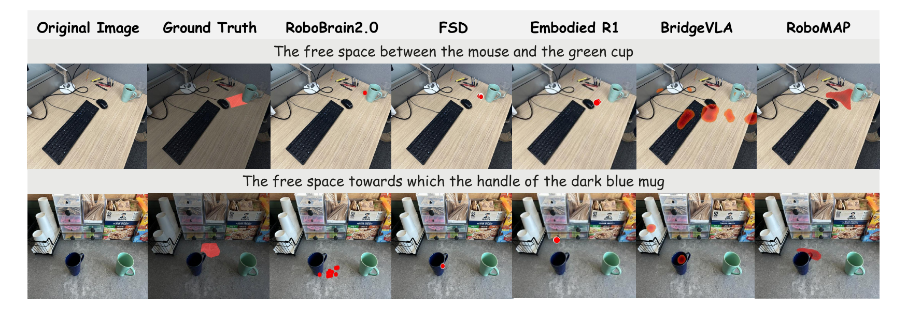
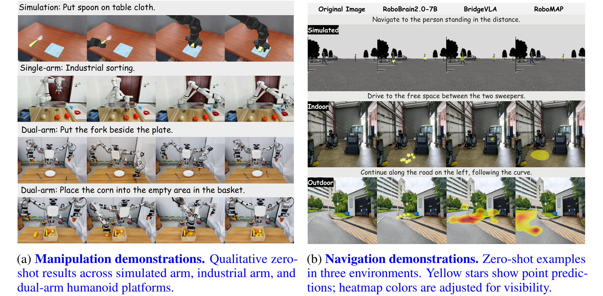

More than a Point: Adaptive Affordance Heatmaps as VLM Grounding Interfaces for Robotics
Accepted to CoRL 2026 (Poster)
Previously titled: More than A Point: Capturing Uncertainty with Adaptive Affordance Heatmaps for Spatial Grounding in Robotic Tasks
Framework Overview

RoboMAP overview: heterogeneous supervision is synthesized into heatmap targets, and the Adaptive Heatmap Decoder produces a dense spatial interface for downstream robotic modules.
Abstract
Hierarchical VLM-based robotic systems often use sparse points or bounding boxes as intermediate spatial representations, which are inadequate for region-level grounding. This is particularly evident in instructions such as “place near the bowl,” which specify a feasible region rather than a single target point. We present RoboMAP, a VLM-based robotic grounding framework that uses adaptive affordance heatmaps as a language-conditioned intermediate interface between spatial reasoning and downstream modules. RoboMAP predicts dense score maps for continuous and object-free target regions, exposing feasible spatial support that downstream segmentation, grasping, and control modules can use beyond sparse prompts alone. To enable scalable training without manual dense labels, RoboMAP synthesizes heatmap supervision from heterogeneous annotations, including points, boxes, and robot trajectory data. Across four spatial grounding benchmarks evaluated with standard point-extraction metrics, RoboMAP obtains the best reported accuracy on three benchmarks while maintaining a 0.04 s grounding-stage forward pass. In 50 real-world dual-arm manipulation trials spanning five tabletop task types, it achieves an 82% success rate using heatmap-guided segmentation and grasp proposal. We further provide qualitative cross-embodiment demonstrations across manipulation and navigation scenarios.
Results and Analysis
RoboMAP generates coherent heatmaps for ambiguous and object-free spatial instructions, preserving feasible regions before downstream modules extract points, masks, or grasps. It achieves the best reported accuracy on three of four spatial grounding benchmarks and a 0.04 s grounding-stage forward pass; downstream perception and execution are excluded from this timing. In zero-shot SimplerEnv evaluation, RoboMAP reaches a 60.5% average success rate. In 50 real-world dual-arm manipulation trials across five tabletop task types, it achieves 41/50 successes (82%), compared with 78% without SAM and 66% for Embodied-R1 with SAM. The qualitative figures below show cross-embodiment manipulation and navigation demonstrations.
Spatial Grounding Results

Camera-ready Table 1. Accuracy is computed from point predictions; grounding time measures only the VLM module.
SimplerEnv Evaluation

Camera-ready Table 5. RoboMAP achieves a 60.5% average success rate across four zero-shot SimplerEnv tasks.
Real-World Manipulation

Camera-ready Table 6. RoboMAP achieves 41/50 successes (82%) across five relational tabletop tasks.
Qualitative Grounding

Camera-ready Figure 4. RoboMAP produces coherent heatmaps that preserve feasible regions and task-specific spatial extents.
Cross-Embodiment Demonstrations

Camera-ready Figure 5. Qualitative zero-shot manipulation and navigation examples across multiple embodiments and environments.
Real-World Execution
The GIFs below are qualitative demonstrations and are separate from the 50-trial quantitative real-world evaluation reported above.

Place the right banana onto the right plate.

Put the bitter gourd in the empty area on the left plate.

Move the bottle into the dustpan.

Put the corn into the bottom basket.

Place the corn in the upper basket.

Move the fish to the middle of the board.

Lay the knife beside the plate.

Put the pepper in the bottom basket.

Move the pepper in the empty area on the left plate.

Place the spoon to the left of the plate.

Put the spoon down near the plate.

Move the trash into the dustpan.
BibTeX
The citation below is provided for readers who want to cite this work.
@misc{shao2026robomap,
title = {More than a Point: Adaptive Affordance Heatmaps as VLM Grounding Interfaces for Robotics},
author = {Shao, Xinyu and Tang, Yanzhe and Xie, Pengwei and Zeng, Long and Li, Xiu},
year = {2026},
howpublished = {arXiv preprint arXiv:2510.10912},
note = {Accepted to CoRL 2026, Poster},
url = {https://arxiv.org/abs/2510.10912}
}